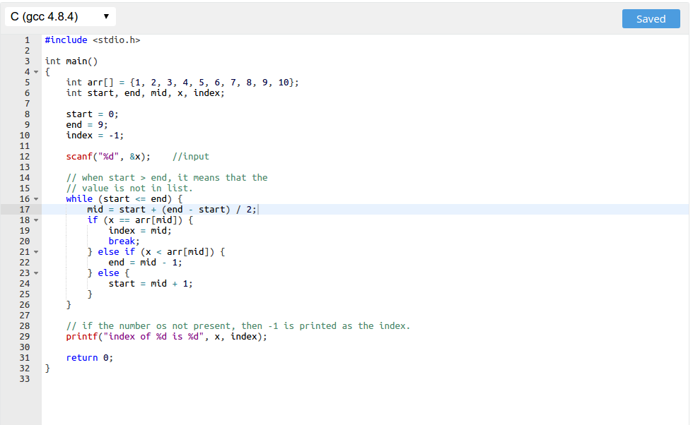

Binary Search
Binary search is an extremenly fast algorithm for searching a number in an array. The only condition required is that the array is required to be sorted. To understand how fast it is, let us take an example.
If there are N elements in an array you have to check all N elements in the worst case (when the element is not present). While in the case of binary search, in worst case, you only have to check log2(N) times, which is much much faster than a linear search.
Let us take a numerical assumption. If the size of array is 1024. Then you have to check all 1024 numbers in worst case. While in binary search you only have to check 10 times !
Let us first see how it is done, and then write the code for it.
Now let us look at the code.
The link to code